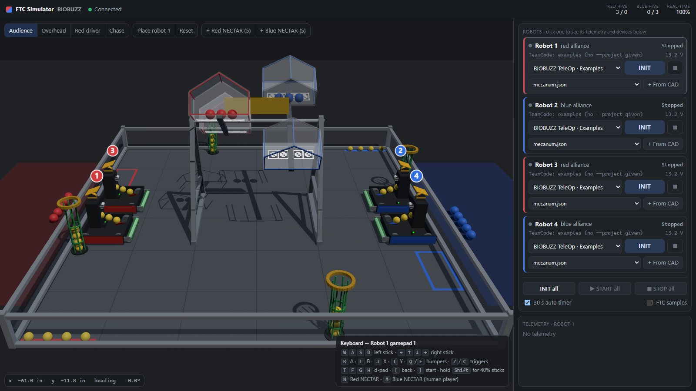
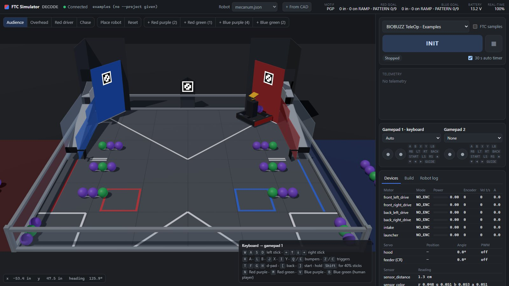
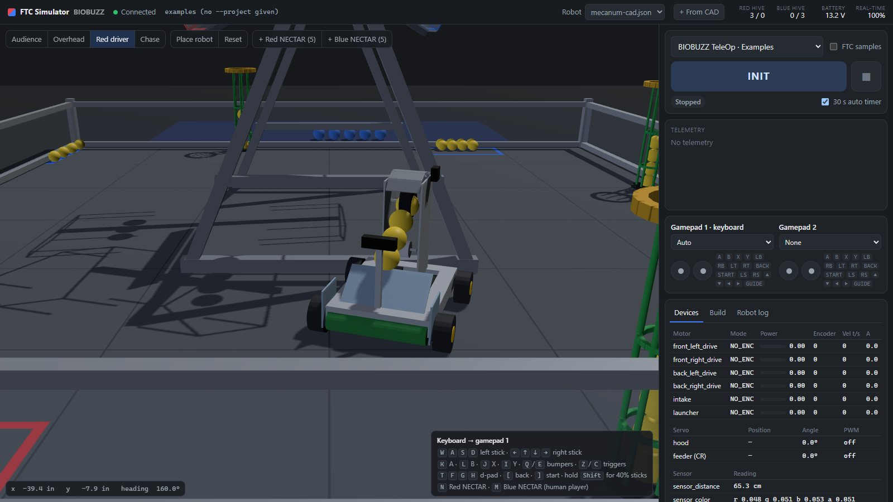

Programming the Robot Before It Exists: A Physics Simulator for FIRST Tech Challenge
Abstract
FIRST Tech Challenge (FTC) teams build a new robot for a new game every season, and their programmers rarely have a working robot to test on. Existing FTC simulators are mainly teaching tools, and none that we found documents a model of the robot hub’s control loops or of the time each hardware call takes. We present a physics-based simulator for FTC robots playing the 2026–27 game, BIOBUZZ. It models the field and its structures, the 56 game pieces, the two bistable HIVES, and up to four robots with their motors, mechanisms, sensors and webcams. A robot is described in a JSON file or imported from its CAD model, in which case its arms, slides and hoods become bodies on joints. Everything specific to one game is kept in a season pack, and the 2025–26 game, DECODE, is included as a second pack. Matches are run from a browser version of the Driver Station.
Rigid-body physics runs in ODE4j with a 1 ms step, paced to the wall clock; on a desktop computer, the physics of four robots and all the game pieces ran at 1.7 to 2.0 times real time, measured before the latest changes to the battery and loop-timing models. We model mecanum wheels with anisotropic contact friction, motors with their datasheet torque–speed curves, and the REV hub's firmware control loops, battery sag and hardware-call timing. The HIVE model is calibrated against the tipping table in FIRST's Event Field Setup Guide and against balls launched by a simulated robot. Webcam frames are rendered in software and passed to FIRST's own AprilTag pipeline; on these frames, which have no lens distortion or noise, the tag positions it reports in our tests are within 2 mm of ground truth.
Teams drive the simulated robots with their own robot code, compiled unmodified, and with real gamepads. They can edit that code in the same page, beside the field, and deploy it from there to the physical robot through their project's own Android build, a path so far tested only against stand-ins for Gradle and the Android Debug Bridge (ADB). We describe the models, a test suite that runs on Windows, Linux and macOS and checks the SDK's stand-ins against FIRST's code, and a planned comparison with a physical robot and field. Our code is open source under the MIT license; the third-party files bundled with it keep their own licenses.
1 ms
physics step in ODE4j, paced to the wall clock
1,130
public and protected members of 111 SDK 12.0 classes checked against FIRST's jars: none that team code can use is missing there
41
of FIRST's sample files, bundled with the simulator, compile unmodified
≤ 2 mm
AprilTag position error on rendered, noise-free frames
233
tests, run on Windows, Linux and macOS
The SDK, sample and AprilTag numbers come from the simulator's own tests; the 1 ms step is a setting. None has been compared with a physical robot yet; Section 10 of the report plans that comparison.

Four robots, two per alliance. Each is its own Robot Controller, with its own TeamCode, gamepads, telemetry and robot file.

The 2025–26 DECODE field, loaded from its season pack: GOALS with RAMPS and GATES, the OBELISK and 36 ARTIFACTS.

A robot imported from its STEP file. Its intake roller and launcher are the CAD parts, driven by the robot's motors.
How it works
One physics world, three inputs
The simulator is one Java process plus a browser page. The team's own project, a robot file for each robot and the season pack of the game being played describe what is simulated. They meet in one rigid-body world stepped every millisecond, which the robots, sensors, webcams and Driver Station all read from or write to. The page's code editor saves the team's files, and deploy builds the same project for the real robot.
A field and game calibrated against FIRST's documents
The BIOBUZZ field holds its structures, four FLOWERS that robots take POLLEN out of, 56 game pieces and two bistable HIVES. A HIVE stays on either stop until enough weight lands in its upward CELL, and the model gets this from its mass distribution alone. One parameter, the height of the center of mass above the pivot (34.5 mm), is fitted so that the HIVE meets every “Necessary” row of the tipping table in FIRST's Event Field Setup Guide.
Motors, hub firmware and the time each hardware call takes
Motors follow their datasheet torque–speed curves, the REV hub's control loops run as they do in its firmware, and every hardware call costs bus time: by default 1 ms per hub command and 2.5 ms per I2C read. At these costs a mecanum TeleOp loop comes to about 95 loops per second without bulk reads and about 133 with them, so control code is tuned at a loop period like the robot's. The costs are estimates until they are measured on a robot.
Robots from CAD
A robot file can point at the team's STEP or URDF model. A STEP file is converted once, in the browser, by OpenCascade compiled to WebAssembly. Masses, oriented collision boxes and the joints of arms, slides and hoods come from the meshes, and the robot's own motors and servos drive those joints.
FIRST's own vision code on rendered frames
Each webcam's view is rendered in software and passed through FIRST's unmodified VisionPortal processors and AprilTag library, with the lens taken from the SDK's calibration table. On these noise-free frames, tag positions are within 2 mm of ground truth. Lens distortion, motion blur and sensor noise are not modeled yet, so a robot's camera will do worse.
Matches with up to four robots
Each robot's TeamCode is loaded by its own class loader, so static fields and two projects with classes of the same name stay apart. Robots meet only in the physics world, where they collide, push each other and show up in each other's distance sensors and webcams. INIT all and START all keep their autonomous timers in step.
One engine, a season pack per game
Everything that belongs to one game is a season pack: a season.json with the field's shapes, game
pieces, start spots and human-player buttons, plus a little Java for what data cannot express. The physics, the
webcam renderer and the 3D view all build from the same shapes, so a new season needs no rendering code.
| BIOBUZZ (2026–27) | DECODE (2025–26) | |
|---|---|---|
| Structures | HIVE structure; 4 FLOWERS that POLLEN can be taken out of; 2 HIVES on pivots | 2 GOALS with RAMPS; 2 GATES; the OBELISK |
| Game pieces | 40 POLLEN, 8 red and 8 blue NECTAR | 36 ARTIFACTS: 24 purple, 12 green |
| Each robot | Holds 4; pre-load 4 POLLEN | Holds 3; pre-load 2 purple, 1 green |
| AprilTags | 30–45, on the HIVES | 20 and 24 on the GOALS; 21–23 on the OBELISK |
| Java in the pack | 6 files, 827 lines | 2 files, 194 lines |
Quick start
Install JDK 17 or newer, then start the simulator with your FtcRobotController project:
Windows
.\run-sim.bat --project "C:\path\to\FtcRobotController"macOS and Linux
sh run-sim.sh --project ~/FtcRobotControllerThe Driver Station opens at http://localhost:8080: pick an OpMode, press INIT, then START. Without
--project it runs the bundled examples and FIRST's samples. --robots 4 plays a full
match, and --season decode switches to the DECODE field. The
README lists every option.
With nothing to install, it also runs in a
GitHub codespace in the
browser, on the bundled examples or your team's repository
(how).
BibTeX
@techreport{li2026ftcsim,
title = {Programming the Robot Before It Exists: A Physics Simulator for {FIRST} Tech Challenge},
author = {Li, Lening and Li, Na},
institution = {Springphy AI},
type = {Technical report},
year = {2026},
url = {https://github.com/Springphy-AI/ftc-sim}
}